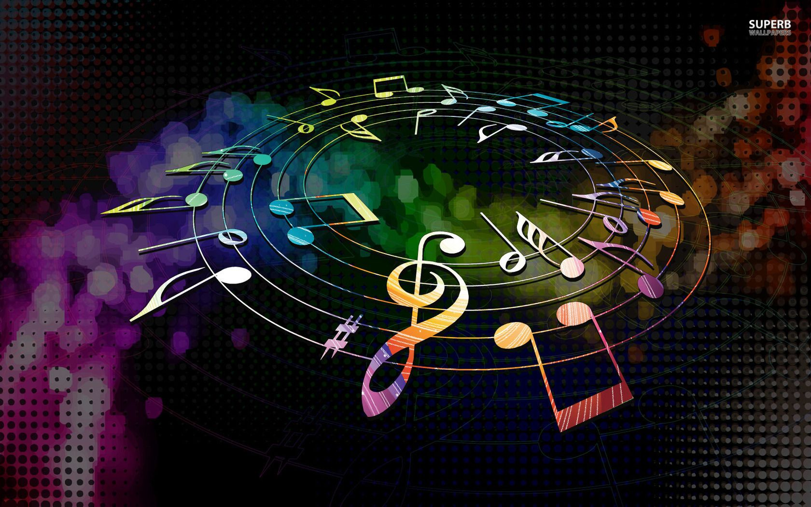

La música activa el cerebro: Escuchar música pone a trabajar casi todo tu cerebro al mismo tiempo y es muy importante para estimularlo.

La música sincroniza el corazón: Tu ritmo cardíaco se adapta automáticamente al ritmo de la música que escuchas en cada momento.
Los instrumentos musicales más antiguos conocidos son flautas de hueso de más de 40.000 años de antigüedad.
Para las civilizaciones antiguas, la música era sagrada y se usaba en ceremonias y rituales.